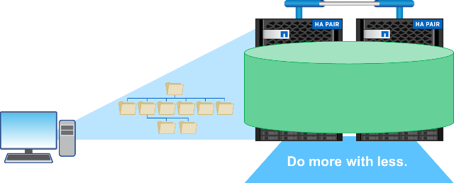

NetApp ONTAP 9.9.1 機能の概要
NetApp ONTAP 9.9.1 機能の概要
データプロトコル
 変更を提案
変更を提案
データプロトコルとは、クライアントおよびエンドユーザが NetApp ONTAP ストレージシステムを操作してデータアクセスを行う方法を指します。NetApp ONTAP には、同じストレージプラットフォームにおけるデータアクセス用に、次のような複数の正式にサポートされたインターフェイスがあります。
-
NAS
-
SAN
-
S3
ONTAP 9.8 では、 ONTAP データプロトコルが数多く拡張されています。
NAS プロトコルの機能拡張
ネットワーク接続ストレージ（ NAS ）プロトコルとは、 NFS や SMB / CIFS などのファイルベースの転送方法を指します。ONTAP 9.8 では、 NAS プロトコルをサポートするために、次の機能が拡張されました。また、 NetApp FlexGroup や FlexCache など、 NAS に特化した機能も追加されています。
NFS の機能拡張
ONTAP 9.8 では、 NFS に関する次の機能拡張が行われてい
-
* 基本的な NFSv4.2 プロトコルをサポートしており、ラベリングなどの NFSv4.2 機能は含まれていません。NFSv4.1 が有効な場合は、 NFSv4 4.2 が有効になります。
-
* qtree のサービス品質（ QoS ）。 * ストレージ管理者は、 ONTAP の qtree に最大 QoS と最小値を適用できます。現時点では、この機能は REST API およびコマンドラインでのみ使用でき、アダプティブ QoS のサポートは含まれておらず、 NFS のみがサポートされています。
SMB / CIFS の機能拡張
ONTAP 9.8 では、 SMB/CIFS に関して次のような機能拡張が行われています。
-
* SMB3 で暗号化された DC 接続。 * SMB DC 接続用にネットワーク経由で暗号化。
-
* SID をセット所有者の UID にマッピング（ -map-sid から -uid-on -set-owner ）。 * このオプションは、ファイルおよびフォルダに所有権を設定するときに ONTAP が Windows SID を UNIX UID にマッピングするかどうかを制御します。このオプションは、 Active Directory サーバへの負荷が増加したお客様のデータ移行エクスペリエンスを向上させるために追加されました。デフォルトはです
true。（バグを修正してください "1153207". ） -
* NFSV4_ACL が継承される場合にモードビットを設定します（ -inhere-modebits-with -nfsv4acl-enabled ） * 。NFSv4 ACLによってデフォルトが削除されたディレクトリ内にSMBファイルが作成される場合、NASとのマルチプロトコル対話がサポートされます
OWNER@、GROUP@`および `EVERYONE@ACL、またはこれらのACLには継承フラグが設定されていません。デフォルトはですfalse。（の修正 "バグ 820848". ）
FlexCache ボリュームの機能拡張
NetApp FlexCache は、 NetApp FlexGroup ボリュームで構成されるスパースな仮想キャッシュです。このキャッシュは元のボリュームをポイントバックし、クライアントからの要求に応じてデータをキャッシュに取り込むことで、真のグローバルネームスペースを提供するために、クラウド内、エッジ内、データセンター内のいずれの場所からでも、 ONTAP を実行する場所で高速かつローカライズされたアクセスを提供します。

FlexCache ボリュームの詳細については、を参照してください "TR-4743 ：『 FlexCache in ONTAP 』"。
ONTAP 9.8 では、次の FlexCache ボリューム拡張機能が提供されます。
-
* SMB / CIFS のサポート。 * NetApp FlexCache では、 NFSv3 / SMB クライアントへのキャッシュアクセスとマルチプロトコルの NAS データアクセスがサポートされるようになりました。FlexCache は、読み取り負荷の高いワークロードに対して、複数サイトに分散されたローカライズされたファイルロックに使用できます。
-
* FlexCache ファンアウト比の向上。 * ONTAP 9.8 では、ファンアウト比が 100 ： 1 になります。以前は、比率は 10 ： 1 でした。
-
* SnapMirror のセカンダリボリュームを含む FlexCache ボリュームを FlexCache SnapMirror のセカンダリボリュームに接続できるようになりました。これにより、プライマリストレージシステムから読み取り処理をオフロードしたり、地理的にローカライズされた元のボリュームを使用したりできます。
-
* ブロックレベルのキャッシュが無効化されます。 * 変更されたデータをキャッシュから削除するときにファイル全体が無効化されるのではなく、変更されたブロックのみが削除されます。これにより、容量と WAN トラフィックの負荷が軽減されます。
-
* キャッシュの事前取り込み。 * アクセスが頻繁に行われることがわかっているボリューム内にディレクトリがある場合は、そのディレクトリの内容をキャッシュにあらかじめ入力して、クライアントへの初回アクセス時のレイテンシを解消できます。
FlexGroup ボリュームの機能拡張
FlexGroup ボリュームは、 NetApp ONTAP スケールアウト NAS 解決策で、最大 20PB 、 4 、 000 億個のファイルを単一のネームスペースで提供します。また、取り込み負荷の高いワークロードに対して自動的に負荷分散された並行処理を実行し、容量、パフォーマンス、シンプルさを組み合わせて処理します。

FlexGroup ボリュームの詳細については、を参照してください "TR-4571 ：『 NetApp FlexGroup Volumes Best Practices 』"。
ONTAP 9.8 では、次の FlexGroup ボリューム拡張機能が提供されます。
-
* Snapshot のサポートが 1 、 023 個になりました。 * NetApp FlexGroup では、ボリュームあたり最大 1 、 023 個の Snapshot コピーを作成できます。追加の Snapshot コピーを使用することで、アーカイブ先としての FlexGroup の実行可能性が高まり、より多くの Snapshot を頻繁に保持できるようになります。また、 Snapshot コピー ID が 255 を超える FlexVol 変換にも対応できるようになりました。
-
* NDMP の機能拡張。 * FlexGroup 9.7 では ONTAP ボリュームの NDMP サポートが追加されましたが、次の機能オプションがありませんでした。
-
ONTAP 9.8 で 'NDMP のサポートが追加されました
-
除外する
-
Restartable Backup Extensions （ RBE ）
-
multi_subtree_names
-
パフォーマンスの強化
FlexGroup ボリュームおよび NDMP の詳細については、を参照してください "TR-4678 ：『 Data Protection and Backup - FlexGroup Volumes 』"。
-
-
* FlexGroup は、 7MTT ボリュームの変換をサポートしています。 * ONTAP 9.8 より前のバージョンでは、 7-Mode から FlexGroup ボリュームに移行された FlexVol を変換できませんでした。ONTAP 9.8 はその制約を解消します。
-
* プロアクティブなサイズ変更。 * プロアクティブなサイズ変更は、 FlexGroup メンバーボリュームの空き容量バッファを維持し、一貫したパフォーマンスと容量の分散を促進する容量管理機能です。
-
* ファイルのクローニング。 * VAAI コピーオフロードのサポートにより、 VMware vSphere を使用して FlexGroup ボリューム内のファイルをクローニングできるようになりました。ただし、 REST API または CLI でのファイルのクローニングは現在サポートされていません。
-
* VMware データストアのサポート。 * ONTAP 9.8 では、 FlexGroup ボリュームがスケーラブルな VMware データストアとして正式にサポートされます。これは、次のことを意味します。
-
パフォーマンスと配置の検証
-
相互運用性認定
-
Virtual Storage Console のサポート
-
NetApp SnapCenter バックアップのサポート
-
非同期削除
async を指定した場合、ストレージ管理者は CLI からディレクトリを削除することにより、ネットワークのレイテンシをバイパスできます。
NFS または SMB 経由で多数のファイルを含むディレクトリを削除しようとしたことがある場合、その負担を知っています。各処理は、使用している NAS プロトコルを介してネットワークを経由する必要があります。その後、 ONTAP はこれらの要求を処理し、応答する必要があります。使用可能なネットワーク帯域幅、クライアント仕様、またはストレージシステムによっては、この処理に時間がかかることがあります。async を指定すると時間が大幅に短縮され、クライアントの作業時間が短縮されます。
async delete の詳細については、を参照してください "TR-4751 ：『 NetApp FlexGroup Volumes Best Practices 』"。
SAN の機能拡張
Storage Area Network （ SAN ；ストレージエリアネットワーク）プロトコルとは、 FCP 、 iSCSI 、 NVMe over Fibre Channel などのブロックベースのデータ転送方式のことです。ONTAP 9.8 では、 SAN プロトコルをサポートするために、次の拡張機能が追加されました。
オール SAN アレイ（ ASA ）
ONTAP 9.7 では、という新しい専用 SAN プラットフォームが導入されました "ASA"ティア 1 SAN の導入を簡易化することで、 SAN 接続にアクティブ / アクティブのアプローチを提供することで、 SAN 環境のフェイルオーバー時間を大幅に短縮することを目標にしています。
ASA の詳細については、を参照してください "オール SAN アレイに関するドキュメント"。
ONTAP 9.8 では、 ASA に次のようないくつかの機能拡張が加えられています。
-
* LUN および FlexVol のボリューム・サイズの拡大。 * ASA 上の LUN を 128TB でプロビジョニングできるようになり、 FlexVol ボリュームのサイズは 300TB に変更できます。
-
* IP 経由の MetroCluster のサポート。 * IP ネットワーク経由のサイト・フェイルオーバーに ASA を使用できるようになりました。
-
* SnapMirror ビジネス継続性（ SM-BC ）のサポート。 * ASA は、 SnapMirror のビジネス継続性機能と併用できます。xref
-
* ホスト・エコシステムの拡張。 * HP-UX 、 Solaris 、 AIX をサポート。を参照してください "互換性マトリックス" を参照してください。
-
* A800 および A250 プラットフォームのサポート。 *
-
* System Manager でのプロビジョニングの簡易化 *
永続ポート
ASA では、永続ポートと呼ばれる拡張機能が追加され、フェイルオーバー時間が短縮されました。ONTAP の永続的ポートは、 ASA に接続する SAN ホストの耐障害性と継続的なデータアクセスを大幅に高めます。ASA の各ノードでシャドウ Fibre Channel LIF が管理されます。ONTAP 9.8 が ASA のフェイルオーバー時間をさらに短縮するには、この機能が重要です。これらの LIF はパートナー LIF の ID を同じにしますが、スタンバイモードのままです。フェイルオーバーが発生して FC LIF をパートナーノードに移行する必要がある場合は、 ID を変更する代わりに（ホストがその変更をネゴシエートする間フェイルオーバー時間が長くなる可能性がある）、シャドウ LIF が新しいパスになります。ホストは、同じ ID の同じパスで I/O を続行します。リンクダウン通知はなく、追加の設定は必要ありません。
次の図に、永続ポートのフェイルオーバーの例を示します。

NVMe/FC
NVMe は、従来の FCP および iSCSI を超えるブロックワークロードでレイテンシとパフォーマンスの向上を支援する新しい SAN プロトコルです。
このブログでは、次の内容を扱いました。 "NVMe over Fabrics を実装する場合、ファブリックは本当に重要です"。
ONTAP 9.4 では NVMe over Fibre Channel がサポートされるようになりました。各リリースで機能が強化されています。ONTAP 9.8 で追加された機能は次のとおり
-
* FCP と iSCSI を備えた同一 SVM で NVMe/FC を使用できるようになりました。 * NVMe/FC を他の SAN プロトコルと同じ SVM で使用できるようになり、 SAN 環境の管理が簡単になりました。
-
* Gen 7 SAN スイッチファブリックのサポート。 * この機能により、新しい Gen 7 SAN スイッチのサポートが追加されました。
S3 の機能強化
S3 プロトコル ONTAP ファミリーに最も新しく追加されたオブジェクトストレージです。ONTAP 9.7 で公開プレビューとして追加された S3 は、 ONTAP 9.8 で完全にサポートされているプロトコルです。
S3 のサポートは次のとおりです。
-
基本的な PUT / GET オブジェクトアクセス（同じバケットから S3 と NAS の両方へのアクセスは含まれない）
-
オブジェクトのタグ付けや ILM はサポートされず、機能が豊富でグローバルに分散された S3 ではを使用します "NetApp StorageGRID"。
-
-
TLS 1.2 暗号化
-
マルチパートアップロード
-
調整可能なポート
-
ボリュームごとに複数のバケット
-
バケットのアクセスポリシー
-
NetApp FabricPool ターゲットとして S3 を使用する場合の詳細については、次のリソースを参照してください。
-
"Tech OnTap ポッドキャスト：エピソード 268 - ONTAP 9.8 におけるネットアップの FabricPool と S3"